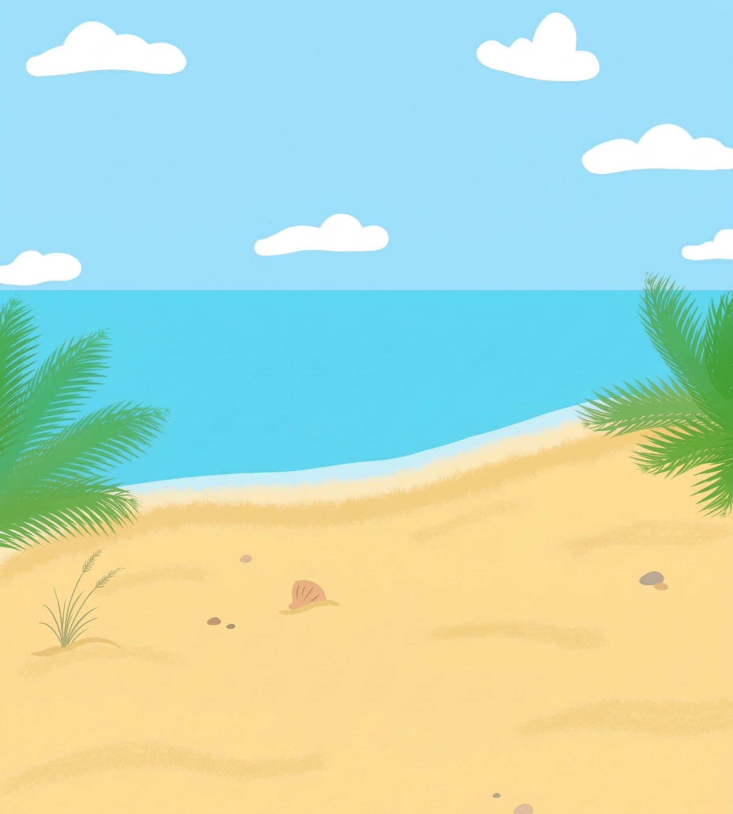
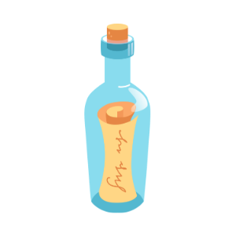
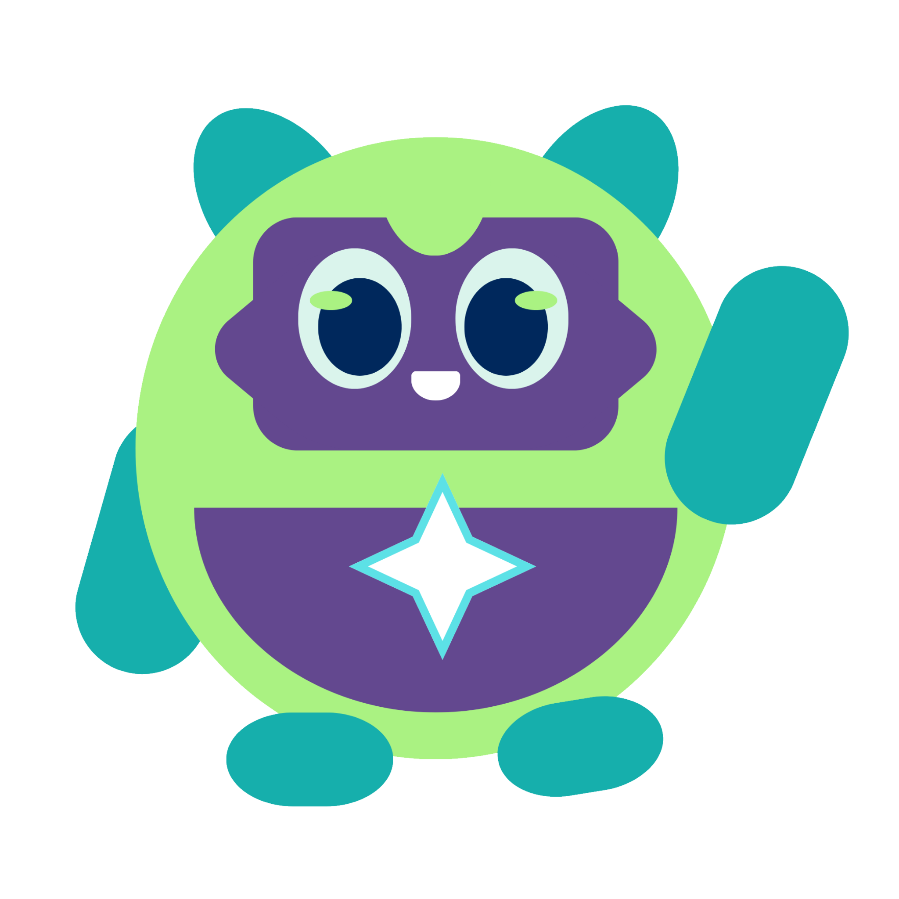
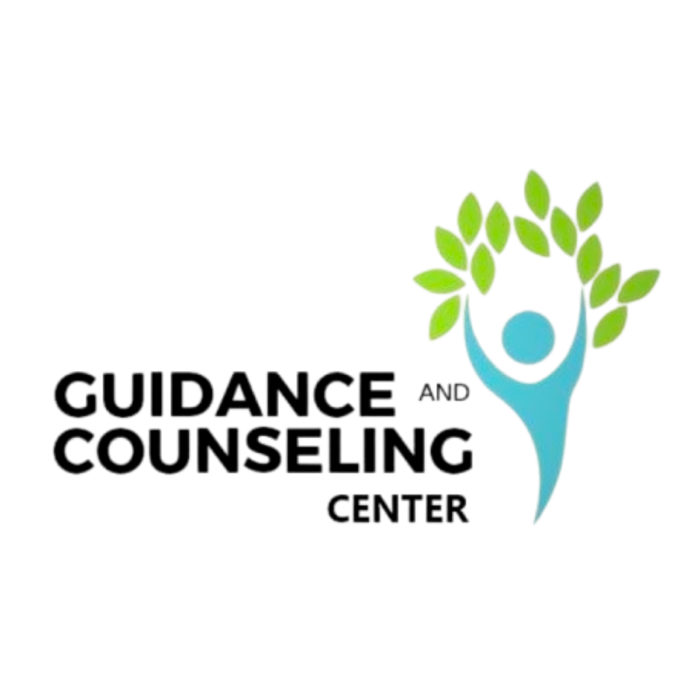

Daily mood check-ins
Track how you feel and collect Tala rewards for showing up, even on quiet days.
Bawat Tala

Student wellness companion
A softer space for your thoughts, moods, quiet wins, and the small moments that help you keep going.


Why it exists
Bawat Tala brings together reflective journaling, mood check-ins, guided wellness tools, reading, and counseling access in one friendly campus-centered app.
Inside the app
Track how you feel and collect Tala rewards for showing up, even on quiet days.

Write privately with a companion that can reflect, summarize, and help name what feels heavy.
Read supportive books and short resources, with reading progress and achievements built in.
Schedule peer or professional support with clearer appointment flows for students.
Meet Muni
Muni helps students turn scattered thoughts into gentler summaries, suggested journal tags, and a clearer next step. It keeps the app feeling personal while reminding users that professional help is available.
Fandom corner
Small steps still count, especially on heavy days.
Tala streaks
Celebrate gentle consistency.

Campus support Connect to guidance when needed.Get the app
Bring the app with you for daily reflection, Muni check-ins, wellness tools, reading, and campus support whenever you need a little room to breathe.